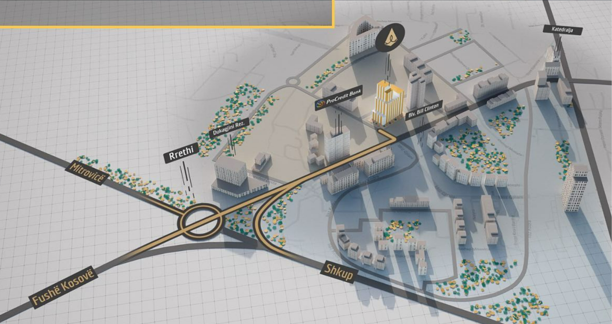

Lokacioni
Icon Tower në Lakrishtë, Prishtinë: Ndërtesa më Ikonike për Jetesën tuaj Modernë Icon Tower është një objekt banimi ekskluziv dhe ikonik, i vendosur në qendër të Lakrishtës, Prishtinë. Ky kompleks rezidencial paraqet një përputhje perfekte mes elegancës së dizajnit modern dhe komoditetit të jetesës së sotme. Cilësi dhe Stil Unik Me një faqe të jashtme tërheqëse dhe arkitekturë moderne, Icon Tower shquhet për cilësitë dhe stilin e tij unik. Apartamentet e këtij kompleksi janë dizajnuar me kujdes, duke përfshirë materiale të larta cilësie dhe përdorimin e teknologjisë së fundit për të siguruar një ambient të rehatshëm dhe të sigurt. Pamje të Mrekullueshme nga Ballkoni Një nga avantazhet më të shquara të jetesës në Icon Tower është pamja e mrekullueshme që ju ofron nga ballkonet e çdo apartamenti. Pamjet e qytetit dhe natyrës rrethuese janë pjesë e përhershme e përvojës suaj të banimit. Përparim dhe Përvojë Bashkëkohore Kjo ndërtesë rezidenciale ofron jo vetëm një vend për të jetuar, por një përvojë të vërtetë bashkëkohore. Me pjesë të përbashkëta dhe ambiente të specializuara, si qendra e fitnessit, zona e lojërave për fëmijë, dhe ambiente tregtare në katin e parë, Icon Tower bën të mundur një jetesë aktive dhe të përshtatshme për të gjithë banorët. Një Lokacion Strategjik Icon Tower është e vendosur në një lokacion të privilegjuar, duke ofruar akses të lehtë në qendrën e qytetit, institucionet arsimore dhe shëndetësore, si dhe mundësi për blerje dhe argëtim. Ky lokacion strategjik e bën këtë kompleks ideal për familjet, profesionistët dhe të gjithë ata që kërkojnë një jetesë të kualitetit dhe të përshtatshme. Përvojë e Pashoqe Banimi Në Icon Tower, çdo aspekt i banimit është menduar për t'u përshtatur nevojave të banorëve. Përvoja e pashoqe e banimit ndërtohet mbi një themele të qëndrueshme dhe të kujdesshme për mjedisin, duke e bërë atë jo vetëm një vend për të jetuar, por një shtëpi që ndiheni krenarë ta quani "tënde".